Today

After (sheet 1): Settings → Classes and ranks
Question 1 answered: B — Settings stays admins only; staff read Color Belt’s Prices tab. Question 2 (the hints as links) is on sheet 2. This sheet is Question 3 of 4. (Preview screenshots, fake data, signed in as an admin, top bar on Worcester. The options are drawn on top of the real Settings page with sheet 1’s Classes and ranks part; nothing in the app is built yet. Addresses are hidden.)
Today the Classes and ranks tab shows only the school chosen in the top bar. Settings ignores the top bar (Dashboard core’s rule: “Settings keeps ignoring the location switcher, and names the school wherever the classes differ — the shared ChoiceGroup if it’s a switch”). So after the move the part must show the schools some other way. All three keep the same class list, drag order and edit buttons as today; only how you get from one school to the other changes. (In the preview both schools have the same seven classes; the real lists can differ.)
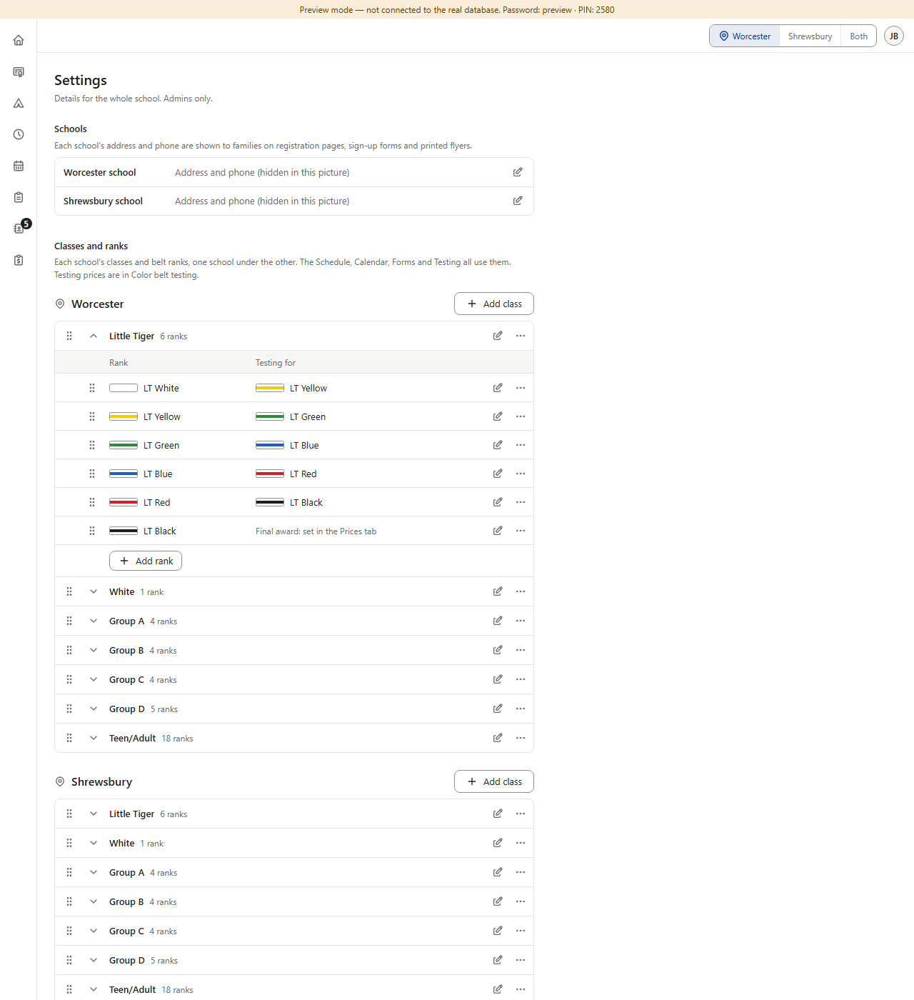
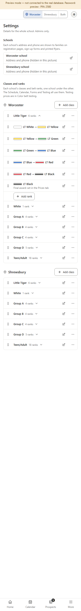
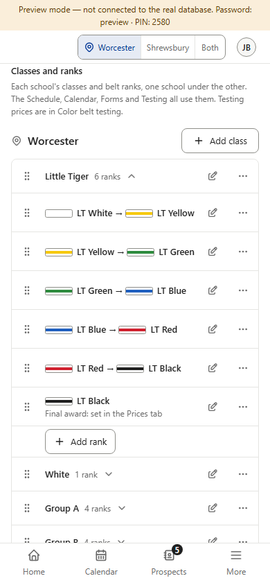
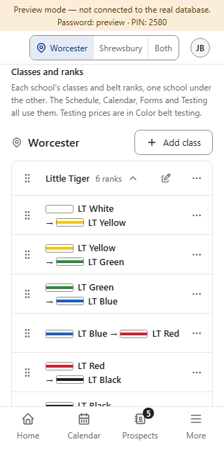
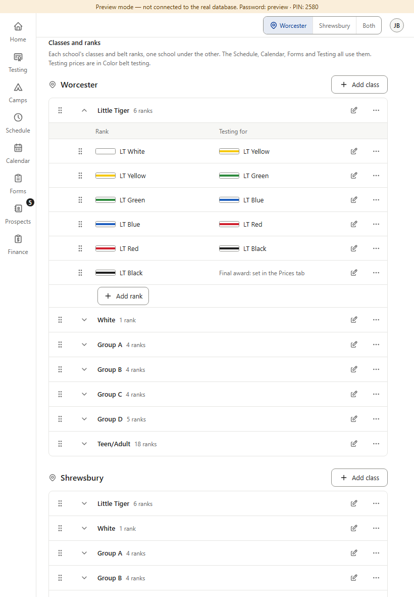
What it does: Both schools’ classes are on the page at once, each under its school’s name, each with its own Add class and its own drag order.
+ Everything visible at once; nothing to tap to compare the schools.
− A long page, longest on phones (14 class lines plus every open class’s ranks). Two “Add class” buttons on one page. A drag can only stay inside its own school, but two near-identical lists one under the other are easy to mix up while scrolling.
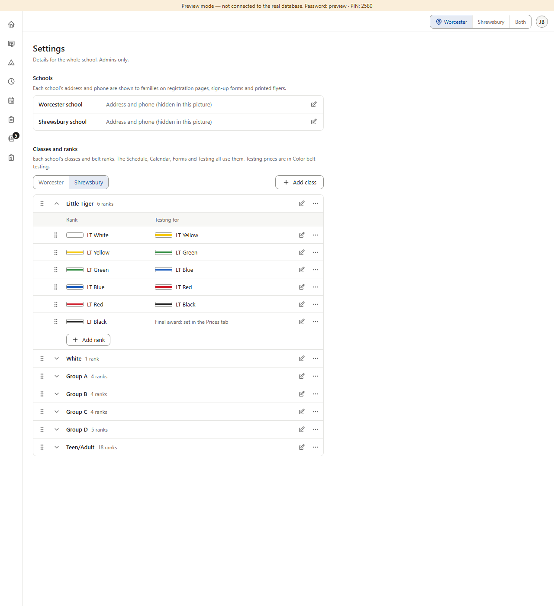
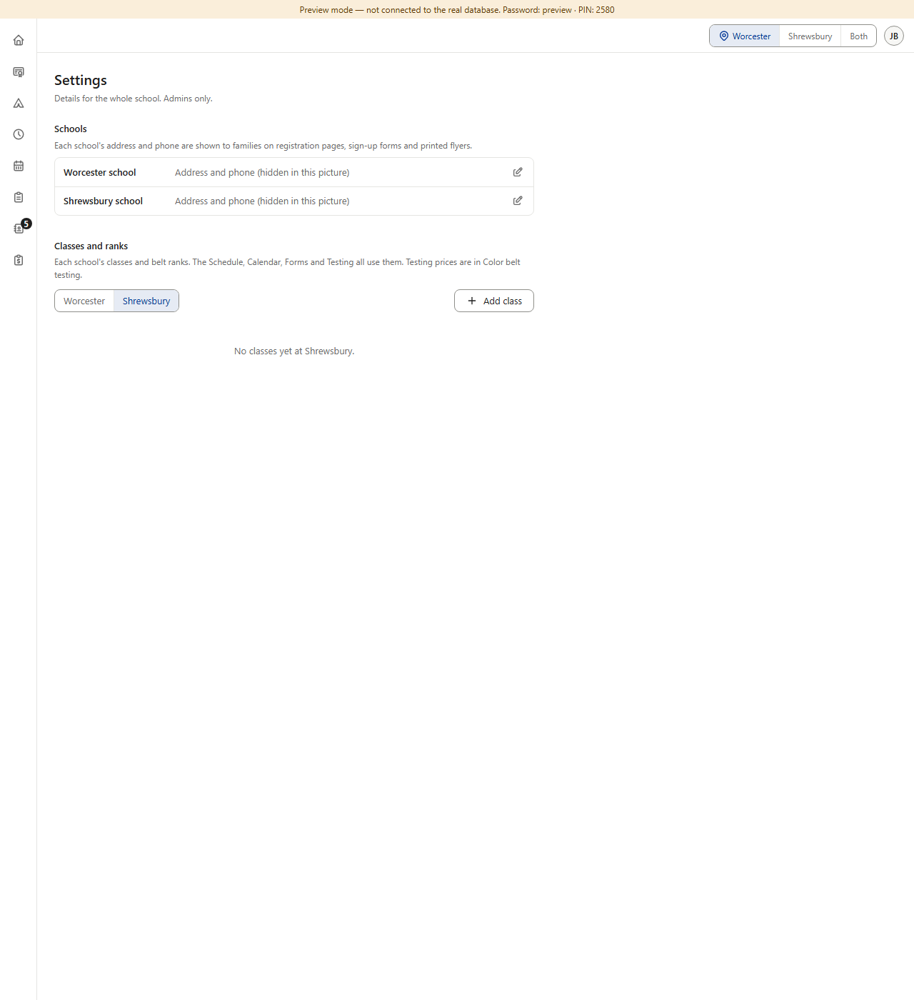
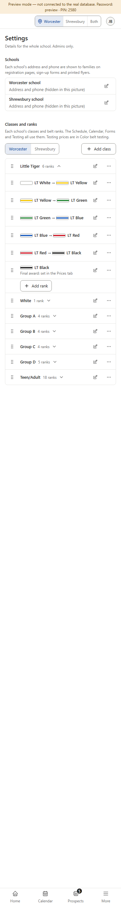
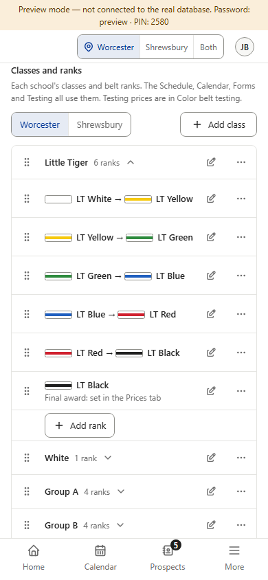
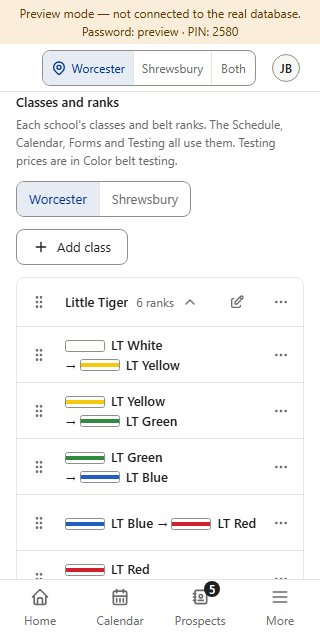
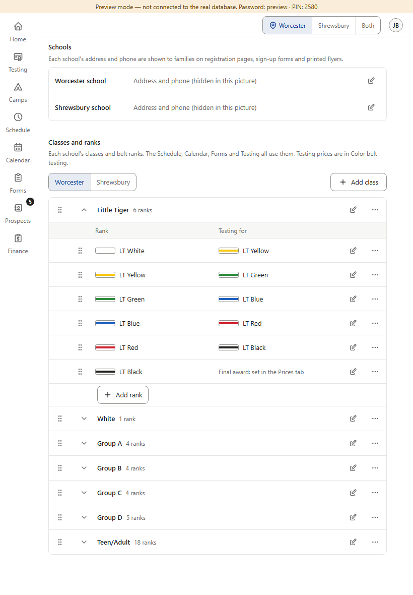
What it does: A Worcester / Shrewsbury switch (the same joined buttons as Open / Closed and Cash / Check / Card) sits above the list, with Add class on its right. It opens on the school chosen in the top bar (Worcester if the top bar says Both). Add class adds to the school shown.
+ Same look and length as today’s tab. The switch always names the school, so nobody edits the wrong school by mistake. One Add class. Uses the shared part Dashboard core’s rule names.
− One extra tap to see the other school; the two schools are never side by side.
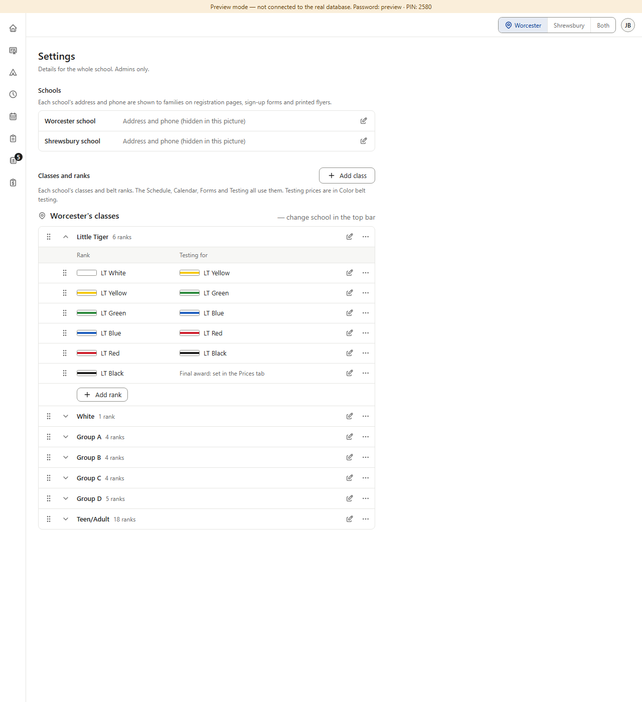
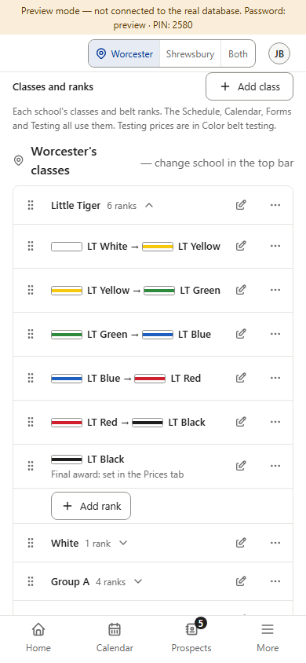
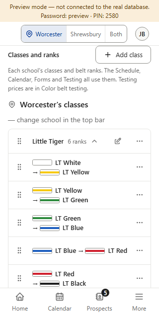
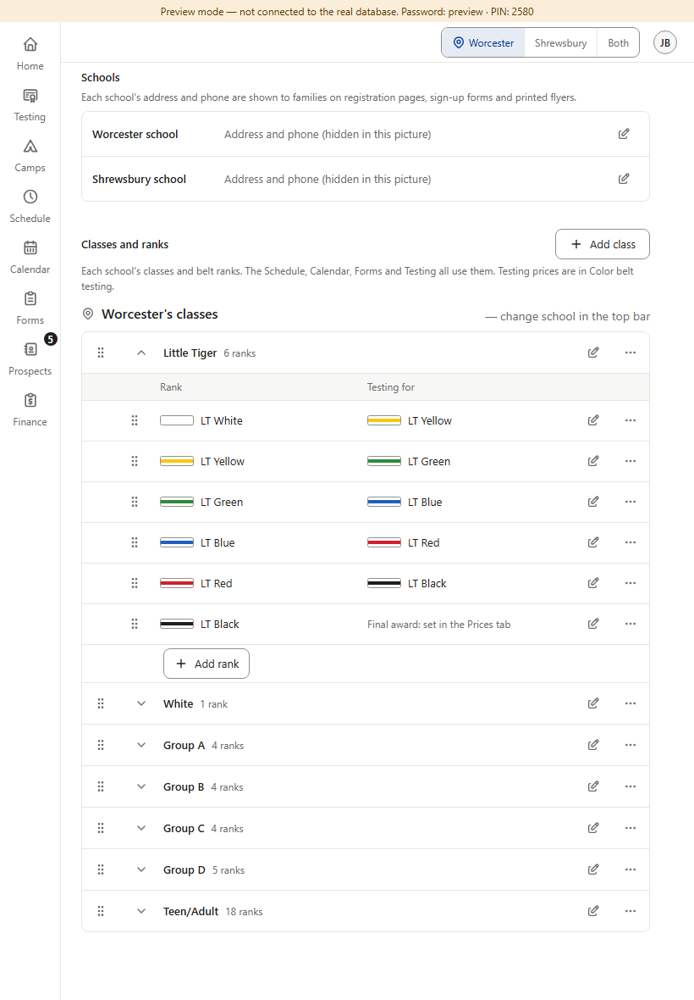
What it does: Works like today’s tab: the part shows the school chosen in the top bar, and says so in its heading.
+ No new control; exactly today’s behavior.
− Settings would be the only part of Settings that follows the top bar — it breaks the page’s rule. An admin who left the top bar on the other school could add or reorder classes at the wrong school without noticing. With “Both” in the top bar the part would still have to pick one school.
Answer Question 3 (A, B or C).